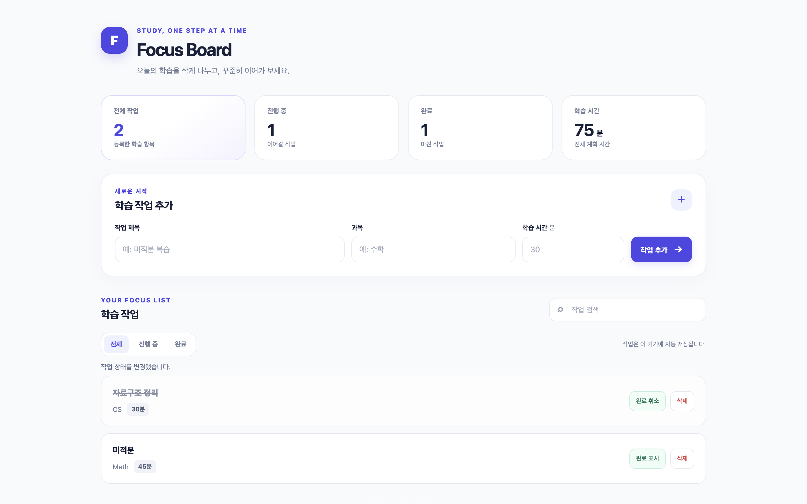
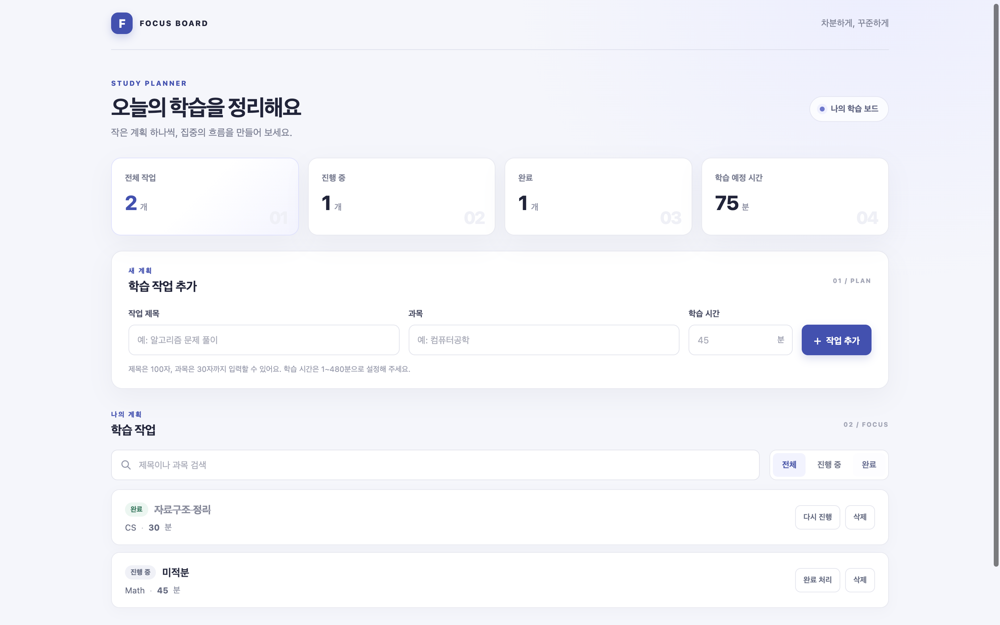

1/ 1
completed01 / RESULT
자동 완료이번 측정의 결론
19분 23.7초
수정 전 17분 42.0초1,200,026
0회 사용량 미확인50 / 50
실행 결과와 자동 완료는 별도 지표- 자동 완료·반영은 수정 전 0/1에서 수정 후 1/1로 바뀌었습니다. 양쪽 산출물 모두 동일한 외부 브라우저 검사 50/50과 추가 저장 복구 진단 14/14를 통과했습니다. 수정 전의 추가 진단은 실행 종료 후 새 검증기로 수행한 것이며, 이전 실행을 자동 성공으로 바꾸지는 않습니다.
- 수정 후 내부 브라우저 QA는 66/66, Node 테스트는 18/18, README 실행 검사는 3/3을 통과했습니다. 내부 검사 개수는 모델이 만든 계획에 따라 달라지므로, 공통 성능 비교에는 양쪽에 똑같이 적용한 외부 검사 50개를 사용했습니다.
- 전체 실행 시간은 17분 42.0초에서 19분 23.7초로 9.6% 늘었습니다. 기록된 토큰 합계는 최소 1,131,454에서 1,200,026으로 6.1% 높아졌지만, 수정 전 HTTP 503 호출 1회의 사용량이 없어 실제 전체 토큰 차이는 확정할 수 없습니다.
- 첫 구현까지 준비 시간은 6분 22.0초에서 10분 4.2초로, 준비 단계 기록 토큰은 265,224에서 392,287로 늘었습니다. 이번 수정은 완료 근거를 만들 수 없던 문제를 해결했으며, 계획·모델 선택 단계의 재요청 비용은 남아 있습니다.
- 수정 후 실행 말미에 GPT 사용 한도가 소진되었을 때 저장된 대체 순서에 따라 Gemini가 최종 판정을 수행했습니다. 이 전환과 최종 반영에는 사람의 수정이나 수동 재개가 필요하지 않았습니다. 다만 시작 시 잔여 한도와 제공자 상태가 달라 모델별 토큰 비율의 변화 전부를 코드 수정 효과로 해석할 수는 없습니다.
02 / COMPARISON
동일 요구사항으로 비교
동일 프롬프트·공통 QA·확장 예산·6회차·45분 관찰 한도. 자동 모델 선택을 그대로 사용했습니다.
| 지표 | 수정 전 | 수정 후 |
|---|---|---|
| 자동 완료·반영 | 회차 한도 · 자동 반영 0/1 | 완료 · 자동 반영 1/1 |
| 전체 실행 시간 | 17분 42.0초 | 19분 23.7초 |
| 보고된 토큰 | 최소 1,131,454 | 1,200,026 |
| 모델 호출 / 사용량 미확인 | 40회 / 1회 | 40회 / 0회 |
| 첫 구현까지 시간 | 6분 22.0초 | 10분 4.2초 |
| 준비 단계 보고 토큰 | 265,224 | 392,287 |
| 부분 작업 완료 | 2/3 | 3/3 |
| 제품 내부 브라우저 QA · 마지막 결과 | 58 / 58 | 66 / 66 |
| 동일 독립 브라우저 QA | 50 / 50 | 50 / 50 |
| 추가 저장 복구 진단 · 양쪽 동일 검사 | 14 / 14 | 14 / 14 |
| 생성 프로젝트 Node 테스트 | 14 / 14 | 18 / 18 |
| README 실행 QA · 마지막 결과 | 3 / 3 | 3 / 3 |
| 실행 중 수동 코드 수정 / 수동 재개 | 0회 / 0회 | 0회 / 0회 |
| 45분 관찰 한도 중지 | 0회 | 0회 |
각 버전 1회이므로 장기 성공률이나 수정의 인과 효과를 확정할 수 없습니다. 모델 서비스 장애·응답 변동·잔여 한도·누적 선택 기록은 실행 시점의 실제 상태입니다. 단일 GPT 모델은 이번에 새로 측정하지 않았습니다.
완료 판정과 사람의 개입 정의
수정 전 종료 근거
부분 작업 2/3 검증 완료. 전체 통합 검증은 아직 완료되지 않았습니다. 회차 한도에 도달해 근거와 작업 공간을 보존했습니다.
수정 후 종료 근거
models/gemini-3-flash-preview · models/gemini-3-flash-preview 목표 충족 / Goal: pass · 학습 작업의 추가, 검증, localStorage 영속성, 필터 및 검색, 실시간 통계 등 모든 기능 요구사항이 구현되었습니다. 또한 제시된 DOM 계약(ID/Class)을 모두 준수하며, 요구된 8개의 산출물(model, app, server, tests 등)이 누락 없이 제공되었습니다. 검증 충족 / Verification: pass · node --test 명령을 통해 모델의 입력 경계 및 비즈니스 로직뿐만 아니라, 경량 DOM 대역을 사용한 UI 렌더링 및 이벤트 연동, 그리고 서버의 MIME 타입 및 라우팅 처리까지 총 18개의 테스트 항목이 성공적으로 통과되었습니다. 파일 저장 안정성 / File persistence safety: pass · 이 프로젝트는 요구사항에 따라 localStorage를 영속성 매체로 사용합니다. model.mjs에서 save() 수행 시 예외가 발생하면 모델의 상태를 갱신하지 않고 기존 저장 데이터를 보존하도록 구현되었으며, 로드 시 데이터 손상이나 스키마 불일치를 감지하여 안전하게 빈 목록으로 시작하는 예외 처리 로직이 검증되었습니다. 시각 설계 / Visual design: pass · Indigo 컬러 포인트를 활용한 현대적인 디자인을 보여주며, 통계 요약 섹션과 작업 목록 간의 명확한 시각적 위계를 갖추고 있습니다. 미디어 쿼리를 통해 1440px와 390px 화면 모두에서 가로 넘침 없이 레이아웃이 최적화되었으며, :focus-visible 등 웹 접근성을 고려한 스타일도 포함되었습니다. README 실행 안내 / README launch instructions: pass · README.md에 기재된 node server.mjs 명령을 통해 http://127.0.0.1:3000/에서 서버가 정상 동작함이 확인되었습니다. readmeLaunchQa 결과, 루트 HTML 및 스타일시트, 자바스크립트 모듈이 모두 올바른 MIME 타입과 함께 성공적으로 반환되었습니다.
수동 개입은 실행 중 생성 코드 수정, 수동 이어가기, 관찰 시간 초과 중지를 각각 기록합니다. 실험 준비·제품 수정·보고서 작성 공수는 이 수치에서 제외했습니다. 수동 개입 0회만으로 자동 성공을 의미하지 않습니다. 실행하지 못한 검사는 실패 개수로 환산하지 않고 미실행으로 표시합니다.
03 / FIX
실측 원인과 최소 수정
확인된 원인
- 수정 전 최종 완료 조건은 실제 Chromium에서 손상된 localStorage를 넣고 복구를 확인하도록 요구했습니다. 기존 실행기는 클릭·입력·재로드만 지원해 그 시험 데이터를 만들 수 없었습니다.
- 수정 전 마지막 세 번의 판정에서 같은 런타임 증거 부족이 반복되었습니다. 생성 앱은 Node 테스트 14/14와 내부 브라우저 검사 58/58을 통과했지만, 해당 필수 완료 조건을 충족할 수 없어 2/3 부분 작업 완료 상태에서 종료됐습니다.
- 수정 전 산출물에도 새 저장 복구 진단을 별도로 적용하니 14/14를 통과했습니다. 이 관찰은 앱 복구 로직보다 검증기의 실행 기능 부족이 자동 완료를 막았다는 근거입니다.
실제 변경
- set-storage 동작을 추가해 격리된 QA 페이지의 localStorage에 원문 문자열을 넣을 수 있게 했습니다. 다른 URL·origin·임의 스크립트 실행은 허용하지 않으며, key 1~128자와 value 최대 2,000자로 입력을 제한했습니다.
- 각 시험 데이터 주입 뒤에 재로드와 결과 확인을 요구했습니다. 재로드·확인 전에 데이터를 다시 덮거나 초기화하는 계획은 거부하여 실제 복구 검사를 생략한 통과를 방지했습니다.
- 실행기, 응답 스키마, 계획·구현 모델의 기능 안내를 함께 맞췄습니다. 완료 기준이나 기존 검사 항목을 낮추지 않았고, 검증 기능 외의 저장·권한·모델 선택 구조는 바꾸지 않았습니다.
- 별도 테스트 단계에서 실제 Chromium으로 고장 난 구현은 실패하고 정상 구현은 14/14 통과하는지 확인했습니다. 전체 회귀 검사 386/386과 수정 소스 4개 파일의 데스크톱 패키지 해시 일치도 확인했습니다.
386 / 386제품 회귀 검사
4 / 4해당 오류 대상 검사
일치패키지와 수정 소스 해시
실제 Chromium에서 복구 안내 누락 fixture는 실패, 같은 검사와 복구 구현 fixture는 14/14 통과. 공통 외부 QA 50개는 기존 조건을 유지하고, 새 저장 복구 진단 14개는 양쪽 산출물에 별도로 적용합니다.
구현·테스트 커밋
- 2e5c19e fix: 손상된 저장 데이터의 실제 브라우저 검증 지원
- 87b8c4c test: 실제 Chromium 저장 복구와 시험 데이터 격리 검증
04 / OUTPUT
산출물을 직접 비교
이미지는 실제 독립 브라우저 QA에서 캡처했습니다. 미완료 산출물도 원래 결과대로 보존합니다.






05 / USAGE
각 단계에서 사용한 AI
준비·구현·판정의 실제 호출 내역을 기준으로 집계했습니다.
수정 전 모델·Effort별 사용량
| 역할 · 모델 · Effort | 호출 | 보고 토큰 | 사용량 미확인 | 호출 시간 합 |
|---|---|---|---|---|
| judge · jev-latest · default | 4 | 28,750 | 0 | 0분 1.2초 |
| planner · models/gemini-3-flash-preview · default | 4 | 14,021 | 1 | 1분 14.9초 |
| planner · gpt-6-astra · high | 1 | 32,652 | 0 | 2분 32.1초 |
| judge · gpt-6-astra · high | 16 | 555,289 | 0 | 4분 51.3초 |
| planner · gpt-6-sol · high | 3 | 89,412 | 0 | 1분 1.2초 |
| worker · gpt-6-luna · max | 12 | 411,330 | 0 | 6분 44.2초 |
수정 후 모델·Effort별 사용량
| 역할 · 모델 · Effort | 호출 | 보고 토큰 | 사용량 미확인 | 호출 시간 합 |
|---|---|---|---|---|
| judge · jev-latest · default | 4 | 21,579 | 0 | 0분 1.0초 |
| planner · models/gemini-3-flash-preview · default | 4 | 26,864 | 0 | 1분 18.2초 |
| judge · gpt-6-astra · high | 5 | 172,872 | 0 | 2분 38.9초 |
| planner · gpt-6-astra · high | 3 | 101,805 | 0 | 5분 17.7초 |
| planner · gpt-6-sol · high | 2 | 62,456 | 0 | 0분 40.3초 |
| judge · gpt-6-sol · high | 10 | 368,763 | 0 | 1분 47.8초 |
| worker · gpt-6-luna · max | 10 | 373,549 | 0 | 6분 37.3초 |
| judge · gpt-6-luna · high | 1 | 34,094 | 0 | 0분 6.5초 |
| judge · models/gemini-3-flash-preview · default | 1 | 38,044 | 0 | 0분 14.8초 |
보고 토큰은 제공자가 반환한 값의 합이며 사용량 미확인 호출은 0토큰으로 간주하지 않습니다. 캐시 입력은 중복 합산하지 않습니다. 실행별 청구 금액이 없어 달러 비용은 추정하지 않았습니다.
06 / NEXT
다음 개선 우선순위
- 계획 확정 전에 각 완료 조건과 실행 가능한 QA 동작을 연결해야 합니다. 검증기가 증명할 수 없는 조건을 미리 감지하면 이번처럼 코드를 여러 번 고쳐도 끝나지 않는 회차를 줄일 수 있습니다.
- 계획·모델 선택 응답에서 빠진 필드와 형식 오류를 정확히 반환하고, 필요한 부분만 재요청하는 흐름을 우선 검토해야 합니다. 이번 수정 후 측정에서는 첫 구현 이전에 10분 4.2초와 392,287토큰을 사용했습니다.
- 모델 평가 기록에서 구현 결함, 검증기 기능 부족, 외부 서비스 오류를 구분해야 합니다. 독립 검사는 통과한 산출물의 자동 반영 실패를 모두 구현 모델의 낮은 성능으로 기록하면 이후 선택이 왜곡될 수 있습니다.
- 사용 한도 회복 후 같은 과제를 각 3~5회 반복하고, 별도의 과제에도 적용해 완료율·준비 비용·토큰 분포를 확인하는 것이 다음 측정입니다. 이번 1회씩의 결과로 장기 성공률이나 모든 프로젝트의 성능 향상을 주장하지 않습니다.
수정 전 측정↗수정 후 측정↗수정 전 원본 이벤트↗수정 후 원본 이벤트↗고정 실험 조건↗회귀 검사 로그↗수정 전 공통 독립 QA↗수정 후 공통 독립 QA↗수정 전 저장 복구 진단↗수정 후 저장 복구 진단↗자동 반영 파일 일치 확인↗보고서 화면 QA↗
재현 조건과 데이터 보존
프롬프트 SHA-256: 1010fb02fa1d603729d91f13e9bd9e025316a17437c73e531dd7ef2cbc0f0573
공통 QA SHA-256: 049272d78695a0dc6775927e1c243cba82be9d5332f4a9798f9d56cfcd84ec82
수정 전 · 소스 a4cc6c3 · 실행 656b55bb-76cd-4fc6-b846-6b6bf6f61ff1
수정 후 · 소스 87b8c4c · 실행 cab76da5-4400-45a7-9317-6615aa6f03ac
기존 보고서와 실패 기록은 보존했습니다. GitHub에는 게시하지 않았습니다.